Session 14.1
Quality Control Requirement
Checklist Items
- Quality Control Requirement
- Draining Fundamentals
- Daily Vehicle Drains
- Daily Filter Drains
- Air Eliminator Valve
- Filter differential pressure and dP limiting device
- Fuelling steps and ladders
- Interlock function, override switch and warning lights
- Deadman Operation
- Bulk Meter
- Bonding Reels
- Lanyard and Insulation
- Absence of Leaks
- Surge Suppressor
- Product Recovery Tank
- Slop Tank
- Automotive and Safety Requirements
- Fire Extinguishers
- Mirrors
- Brakes
- Lights, Wipers, Alternator/Generator
- Traffic Cones & Flags
- Hose Lifters & Castor Wheels
- Spark Arrestors
- QC Materials
- Spill Kit Materials
- Reliability Checks
- Form Used to Record Check Results
- Q&A
14.1.1 Draining Fundamentals
- Daily Clear and Bright test on a sump sample is the fundamental method for assessing the presence of microbiological growth in fueller tanks and fuelling vehicle filters
- Draining shall be carried out at FULL FLOW from the low point of vehicle tanks
- Draining shall be carried out UNDER PRESSURE from filter low points or filter sumps
- A failure to drain filter low points and sumps and remove water and sediment under pressure may promote MICROBIOLOGICAL growth or lead to AIR ENTRAPPED in the system, which can compromise safe filter operation
- If Draining under pressure is not possible, procedures shall ensure that the air is slowly expelled from the filter vessel at the beginning of the subsequent pumping/fuelling operation
- Draining shall be carried out using clean, clear glass jars, stainless steel buckets or white enamel buckets
- Quantity drained shall be sufficient to ensure that an amount in EXCESS of the LINE CONTENT has been displaced
- A minimum 1-litre sample shall then be drawn into a clean clear glass jar or “visijar” for a Visual Appearance Check followed by a CWD Check
- For multiple-compartment fuellers drain samples shall be drawn from EACH compartment for a Visual Appearance Check
- If the Visual Appearance Check from each compartment is acceptable, then carry out a CWD test on a COMPOSITE sample
4.1.2 Daily Vehicle Drains
- Tank bottom of each refueller, cart or other refuelling equipment shall be drained, and the sample subjected to a Visual Appearance Check
- Same shall be repeated each shift and recorded
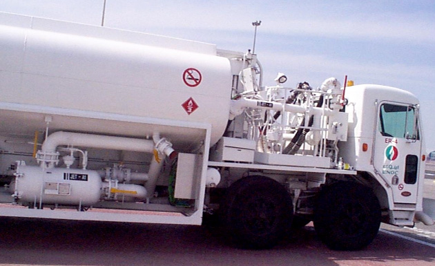
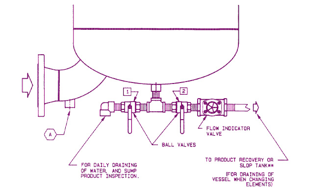
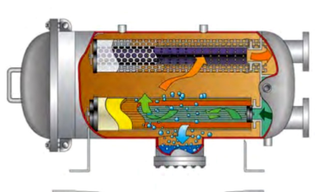
Daily Filter Drains
- Daily, at the start of the morning shift, filter vessels on each hydrant dispenser, refueller, dispensing unit or cart shall be drained of any free water while under continuous pump or hydrant pressure
- After draining, a minimum 1-litre sample shall then be drawn into a clean, clear glass jar and subjected to Visual Appearance Check
- Sample should be drawn from SUMP DRAIN of Micronic Filter or Filter Water Separator
- Sample should be drawn from From the Filter Monitor* vessel drain UPSTREAM of the filter elements
* Filter monitor to be phased out by 01 July 2023
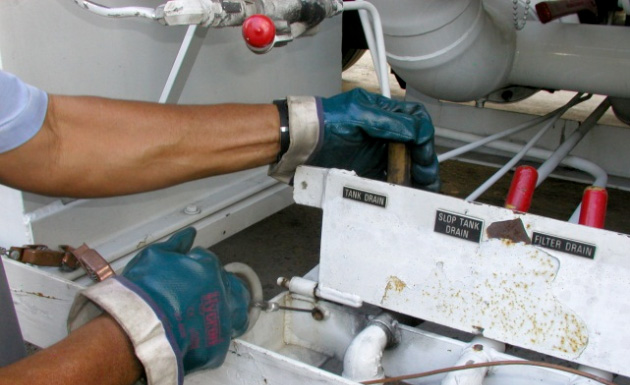
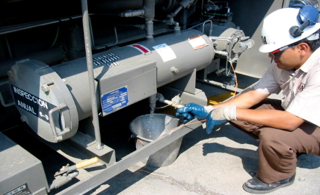
- Hydrant dispensers and carts, which are not in daily use, should not be sampled daily
- Filter vessels that are not in daily use should be kept full by re-circulation
- Filer vessel not in daily use shall be drained at least weekly and, before use
- Daily sampling is likely to reduce the fluid level in the vessel possibly sufficiently to degrade element performance and create a potential explosion hazard
* Filter monitor to be phased out by 01 July 2023
14.1.4 Air Eliminator Valve
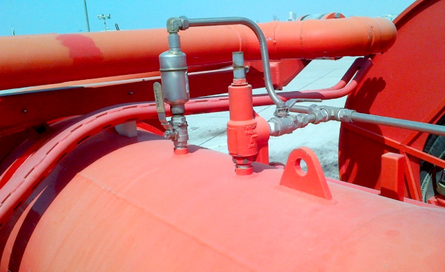
- Filters are fitted with Automatic Air Eliminators at the highest point in the filter vessel
- Isolation valves fitted on the Air Eliminator shall be sealed in the OPEN position
- Isolation the valve shall be checked DAILY to ensure it is sealed open
- It is important that air can vent freely as the accumulation of air inside the filter vessel can create hazardous operation
14.1.5 Filter differential pressure and dP limiting device
- Differential pressure (dP) gauge shall be observed and the dP and flow rate shall be recorded during every underwing pressure fuelling
- Daily differential pressure and flow rate shall be recorded for every vehicle in service and the records checked to ensure that the dP at maximum achievable flow rate for the vehicle does not exceed the maximum changeout dP recommended by the manufacturer
- Reset mechanism of dP limiting device (where fitted) shall be visually checked daily to ensure that the system has not been overridden and that controls to prohibit resetting of the system by fuelling operators are still in place
14.1.6Fuelling steps and ladders
- All stepladders, towable platforms and elevating fuelling platforms shall be visually inspected daily before use, for any loose, cracked, damaged or missing parts, and any spills/drips shall be cleaned.
14.1.7 Interlock function, override switch and warning lights
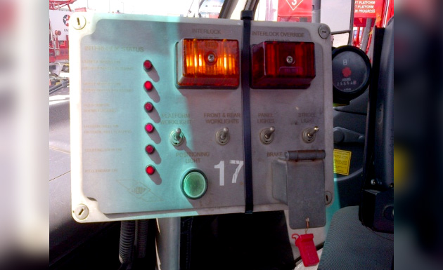
- A visual check to ensure the seal on the brake interlock override is intact and has not been tampered
- Missing or broken seal should be investigated to find if there is any incident involving inappropriate vehicle movement
- It is a good practice to use a numbered seal and record it daily to track usage
Interlock system and Emergency Engine Stops - This daily check consists of removing at least one of the interlocked components (a different one each day in rotation) and checking that the INTERLOCK SWITCH and WARNING LIGHT are working.
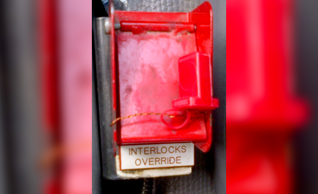
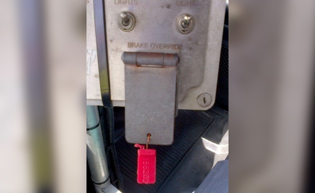
14.1.8 Deadman Operation
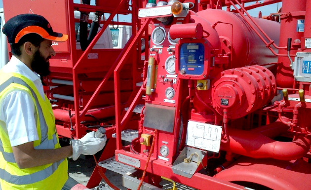
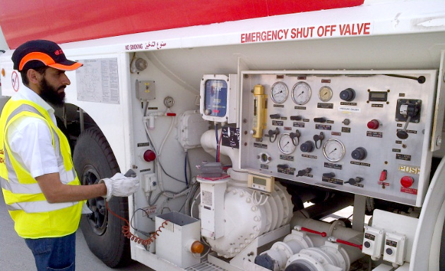
- The seals on deadman override switches shall be checked daily (where fitted and not of the preferred push-button type)
- The Deadman Control shall be inspected daily for general condition and proper activation control, including the indicator light
- Air operated deadman controls shall be checked for leakage and that the exhaust ports are clear
- Checks shall be made to ensure that the deadman timer and alarm are working which means that depressing is needed to the deadman handle to reset the timer and alarm
- The cable shall be checked daily for general condition and operation
- Reels (where fitted) shall latch properly, hold and retrieve after the cable is extended to any length
14.1.9 Bulk Meter
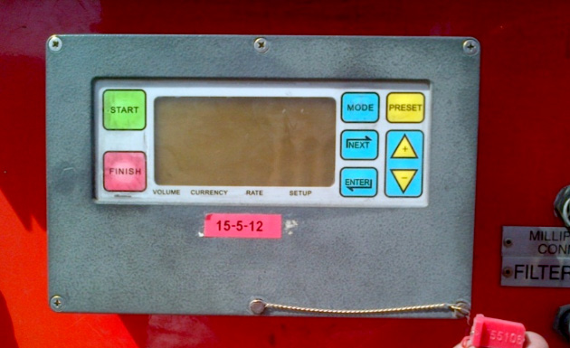
- Meters shall be visually inspected DAILY for leaks and proper condition, and meter seals checked for breakage
- Visual check to ensure the meter calibration authority seal is still securely in position
- Assures customer’s confidence in delivered quantity and is usually a LEGAL requirement for SALES
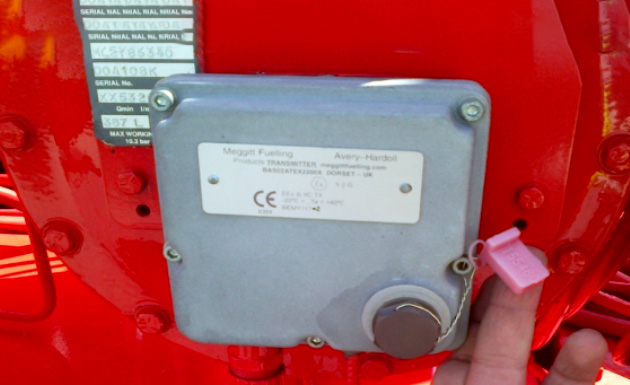
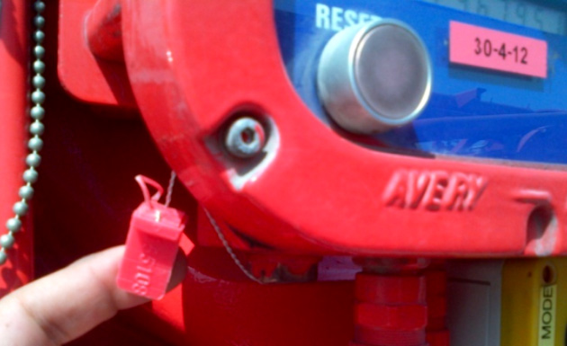
14.1.10Bonding Reels
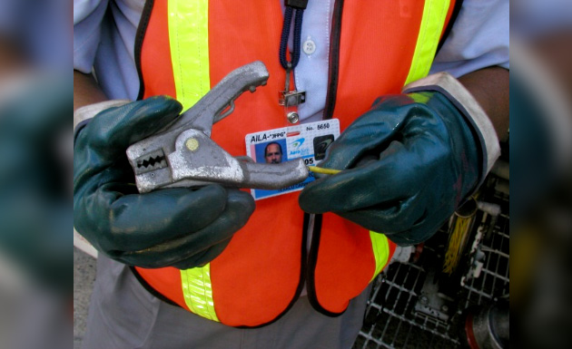
- A general visual assessment of the bonding reels is required to ensure the following:
- General condition of the reel and bonding reel is securely attached to the vehicle
- Firm attachment of the bonding clip
- Bonding reels move freely and are ready to use
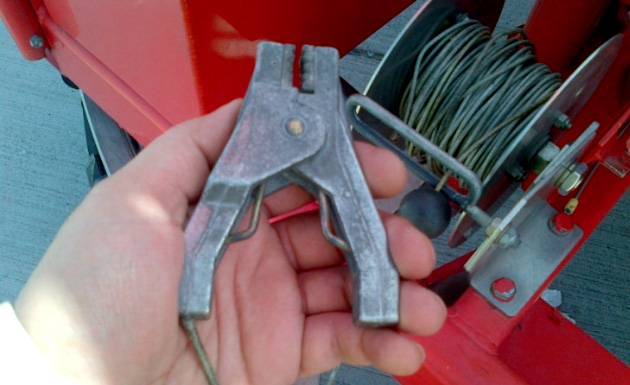
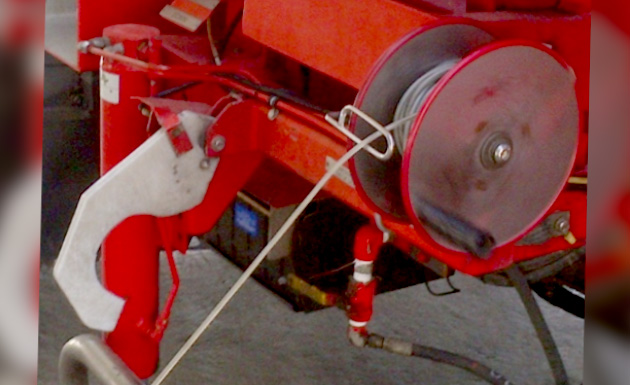
14.1.11 Lanyard and Insulation
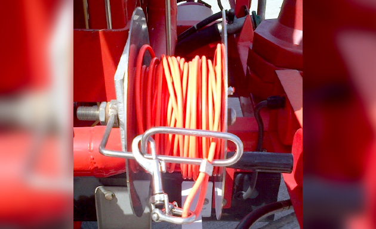
- Lanyards for Hydrant Quick Release Valves must be checked daily to ensure they are in good condition and clips firmly attached
- Lanyards must be insulated from the vehicle and hydrant valve if the lanyard remains connected to the vehicle during fuelling
14.1.12 Absence of Leaks
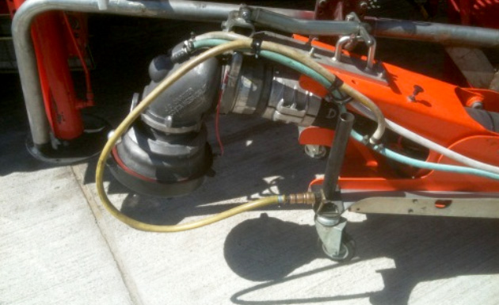
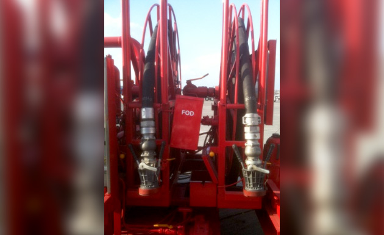
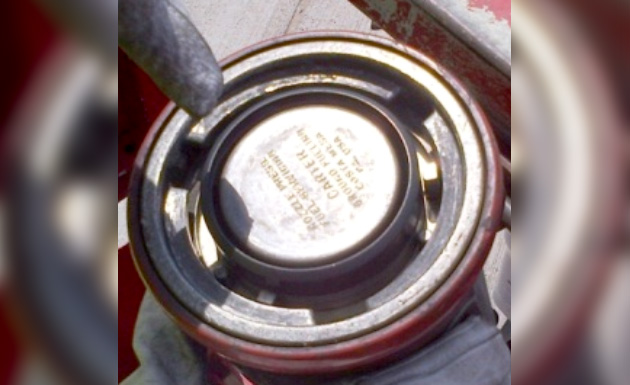
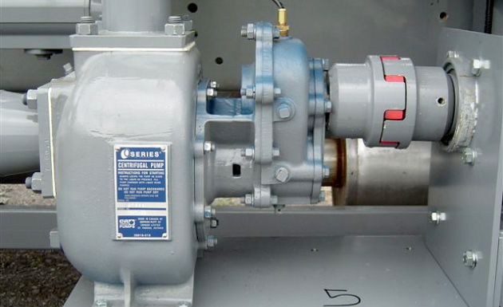
- Visual checks shall also be performed on the entire fueling equipment to ensure they are free of any leaks
- Special attention should be given to the following components:
- Intake coupler and underwing nozzles
- On poppet, nose seals and valve levers
- Sense and air hoses
- With no cracks. Cracks may eventually lead to spills if subjected to pressure
- Delivery hoses
- Booster pumps (if equipped) for oil/fuel leaks
- Flanged connections
14.1.13 Surge Suppressor
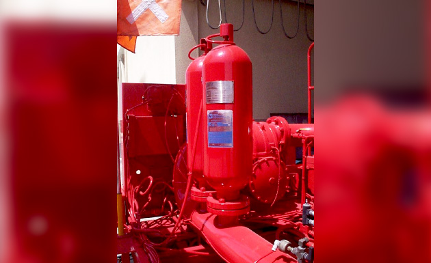
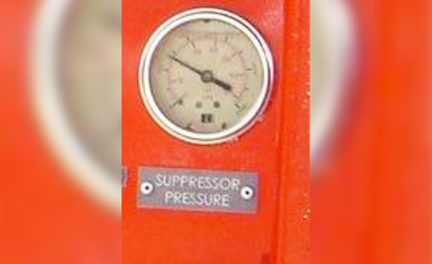
- The precharged pressure of surge suppressors shall be checked daily for the first two (2) weeks after commissioning or repair of a dispenser and at weekly intervals thereafter
- The surge suppressors shall be checked weekly and a drop of more than 5% over a weekly interval may indicate a leak in the system
- It is good practice to check surge suppressor pressure gauges during each refuelling
14.1.14 Product Recovery Tank
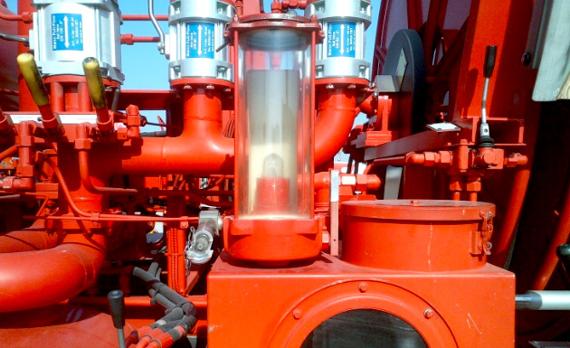
- Tanks used for the consolidation of drain samples taken from fuelling or mobile equipment containing the same grade of aviation fuel, where, after satisfactory quality checks, the drained product may be pumped back into aviation fuel storage tankage
- Product recovery tanks shall be checked at least daily for water and sediment
14.1.15 Slop Tank
- A tank used to collect product which is unsuitable for aircraft use. The product contained in slop tanks shall be removed and may be downgraded for non-aviation use
- Slop tanks should be drained daily to ensure sufficient ullage for at least one day's operations
- This should be checked daily to ascertain that it’s content is on the low level as it may overflow from the tank vent if not evacuated on time
14.1.16 Air Tank and Air Filter Drains
- Compressed air tanks and air filters accumulate water as moisture condenses out of the air
- The presence of water not only takes up volume in the small tanks that should be used for compressed air, but it also makes it possible for water to get into the air switches creating corrosion and actuation problems
- After draining, the level of air pressure shall be checked to ensure it reaches expected operating levels